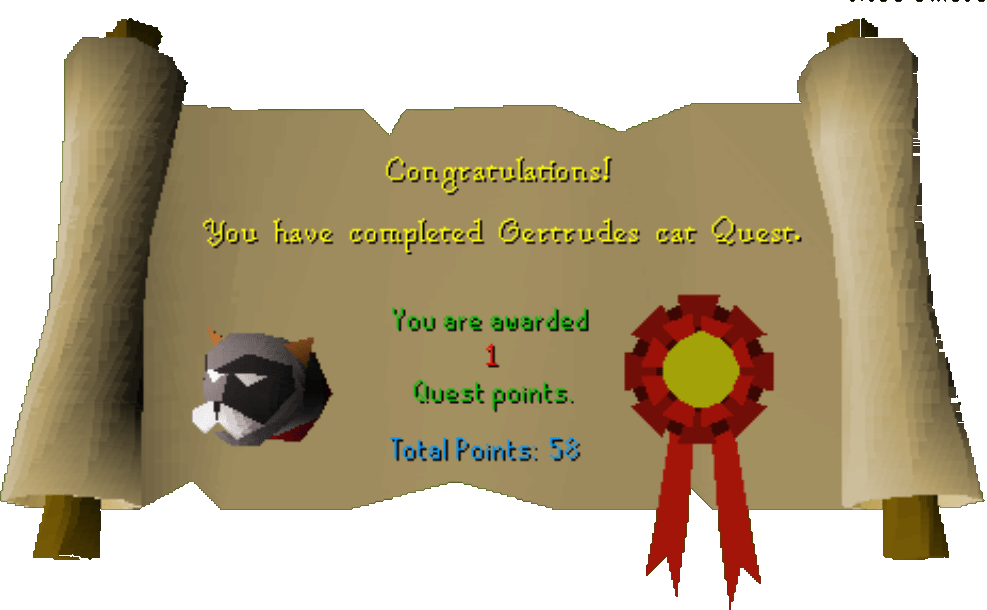

Gertrude's Cat
Description: Gertrude's cat has been missing for some time now - for her piece of mind her prized pet must be rescued. Handling cats isn't an easy business. They get hungry and need plenty of attention but if you're the pet type, then this is the quest for you!Difficulty: Novice
Length: Short
Items & Skills Needed:
Recommended:
Reward: 1 Quest point, 1,525 Cooking XP, Chocolate Cake, Stew, a Kitten
Instructions:
Find Gertrude and get the information about her problem. She'll tell you to talk to her boys, Wilough and Shilop, in Varrock Square (they are just west of the big fountain).
Talk to Shilop, and he'll tell you where he last saw the cat for 100 gp (little kids have to get their allowance somehow...).
Head north to the Jolly Boar Inn, then go east to the lumber mill. You can hop the fence on the south side over the broken part.
Go over to the ladder and on the 2nd floor try to pick up the cat. It will deal 3 damage, and a message will appear saying it might be thirsty. Use milk on it. Repeat the procedure only it's hungry this time. Rub your doogle leaf on a sardine to create a seasoned sardine, and feed it to the cat. Repeat one more time and find out it doesn't want to leave and can hear kitten mews in the distance.
Go back down and look in the pinkish crates for cats. You only need 1 kitten to take back up to Fluffs (the cat). Only one of the crates has a cat in it, but for some reason, several will mew. It might be random, but I found mine in the most southeastern box. Use the kitten on Fluffs, and they'll run home.
Run back to Gertrude's place, and she'll talk for a minute before giving you your reward.
Kitten Care:
To make kittens grow into cats, you can use balls of wool with them, have them chase and kill rats, pet them, feed them sardines and other fish, and give them milk. Be careful not to feed it too much, or it will become fat. Once it has grown into a cat, you can take it to Gertrude's cousin in West Ardougne, assuming you have completed Plague City and Biohazard to get in. He'll give you 100 Death runes in exchange for the cat.
For a indepth guide for kittens, see the Kitten Care Guide.
Congratulations, Quest Complete!

This quest guide was written by Gnat88. Thanks to henry-x for corrections.
This quest guide was entered into the database on Sat, Feb 28, 2004, at 06:20:27 PM by Monkeychris and was last updated on Wed, Mar 31, 2004, at 04:58:57 PM.